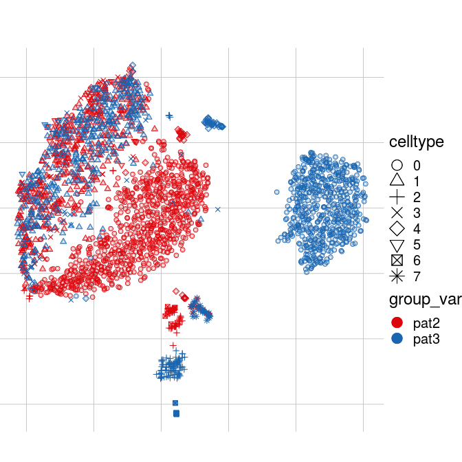
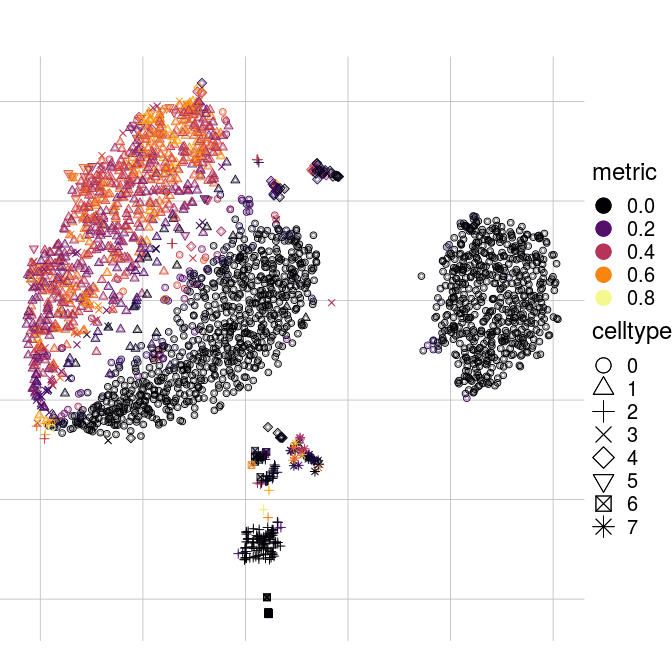
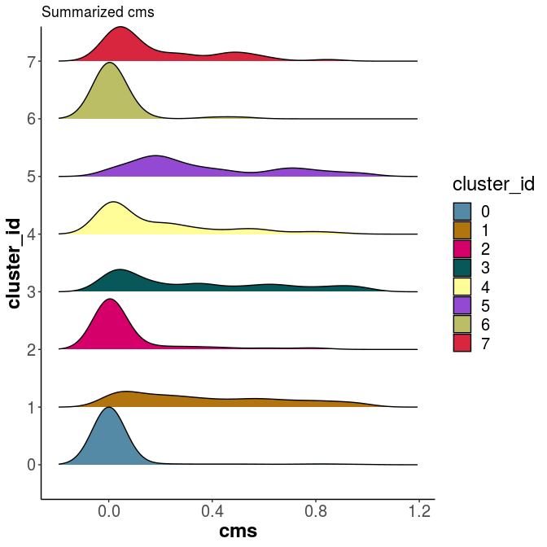
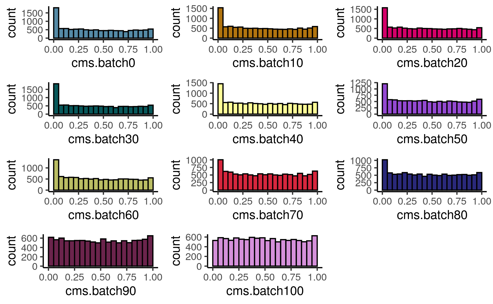

CellMixS - Batch quantification with single cell resolution.
Explore data integration and batch effects
Almut Luetge 1
@Almut30618742
almut.luetge@uzh.ch
Mark D. Robinson 1
mark.robinson@imls.uzh.ch
1 Institute for Molecular Life Sciences, University of Zurich, Switzerland
1 SIB Swiss Institute of Bioinformatics, Switzerland
Introduction
Technological advances resulted in a rise of single cell RNAseq (scRNA-seq) data sets. As with other high-throughput technologies batch effects are a major challenge. In scRNA-seq analysis this is particular striking as major analysis steps (e.g. clustering) are not model dependent and a huge potential in this great ressource is in the integration of different data sets and modalities.
Objectives
- Detection of batch effects and biases in scRNA-seq data.
- Evaluation and comparison of data integration (e.g. after batch effect correction).
Methods
Cellspecific Mixing Score (CMS):
A test for batch effects within k-nearest neighbours (knn):
- independent of clustering
- independet of batch compositions
Tests for each cell the hypothesis that batch-specific distance distributions towards it’s knn cells are derived from the same unspecified underlying distribution using the Anderson-Darling test (Scholz and Stephens 1987).
Local density factor differences (ldfDiff):
A test for the data’s internal structure and variability preservation (removal of biological signal or random addition of a signal):
- independent of clustering
- comparable and interpretable
Tests differences between each cell’s local density factor before and after data integration (Latecki, Lazarevic, and Pokrajac 2007).
Results
Cellspecific mixing scores of a distinct patient batch effect: Some celltypes form separated cluster per patient and others show one well mixed cluster. 
Cellspecific mixing scores (cms) capture patient mixing. Celltypes that subcluster by patient get a score close to 0, while the cms increases with batch mixing.

Differences between celltypes can not always be spotted as easily as above, but they get apparend when looking at the score distributions:

The cellspecific mixing score can be interpreted as the data’s probability within an equally mixed neighbourhood. Data with a batch bias show an accumulation of low p-values, while a randomly distributed batch variable results in a flat score (p-value) distribution. This can be shown by percentwise increasing the amount of randomly assigned batch label. The p-value histogram flatens with increased randomness in the batch variable.

Conclusion
CellMixS is a tool set to evaluate and visualize data integration and batch effects in single-cell RNA-seq data.
Main features:
Quantify (batch-) mixing:
- Cellspecific
- Neighbourhood adjustment (Unbalanced batches!)
- Different metrics
- Cellspecific
Quantify structual changes upon integration:
- cellspecific
Visualize mixing:
- summarize and compare scores
CellMixS is available as an Bioconductor R package at https://bioconductor.org/packages/release/bioc/html/CellMixS.html.
References
Latecki, Longin Jan, Aleksandar Lazarevic, and Dragoljub Pokrajac. 2007. “Outlier Detection with Kernel Density Functions.” In Mach. Learn. Data Min. Pattern Recognit., 61–75. Berlin, Heidelberg: Springer Berlin Heidelberg. doi:10.1007/978-3-540-73499-4_6.
Scholz, F. W., and M. A. Stephens. 1987. “K-Sample Anderson-Darling Tests.” J. Am. Stat. Assoc. 82 (399): 918. doi:10.2307/2288805.